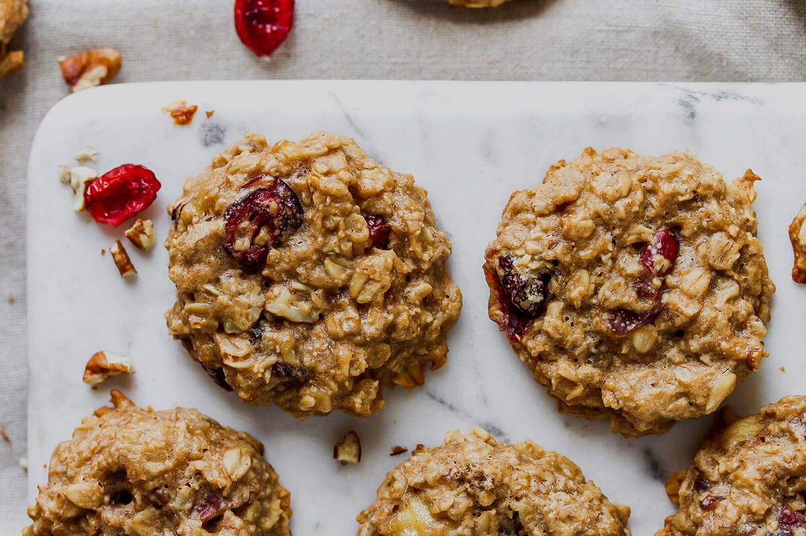

Galletas de avena
Estas galletas de avena combinan la rusticidad de los copos con una textura perfecta: ligeramente crujientes
por fuera y suaves por dentro. Son ideales para meriendas o el desayuno, y su preparación sencilla permite
personalizarlas a tu gusto con canela, frutos secos o chocolate.

Ingredientes
- 115 g de copos de avena (hojuelas)
- 50 g de harina (puede ser todo uso o integral)
- 75 g de azúcar (puede ser moreno o blanco)
- 50 ml de aceite vegetal (maíz o girasol)
- 1 huevo
- 1 cucharadita de esencia de vainilla
- 1 pizca de sal
- ½ cucharadita de canela para sabor extra (Opcional)
Proceso
- Mezclar base húmeda:
En un bol, bate el huevo con el azúcar hasta obtener una mezcla cremosa. Incorpora el aceite y la
vainilla, integrando bien los ingredientes.
- Agregar ingredientes secos:
Añade la harina, la avena, la sal y la canela (si la usas). Mezcla con las manos o una espátula hasta
formar una masa compacta y homogénea.
- Refrigeración (opcional):
Deja reposar la masa en la nevera durante unos 20 minutos para manejarla mejor y obtener galletas más
firmes y definidas.
- Formar y hornear:
Con las manos ligeramente engrasadas, forma bolitas y aplánalas un poco. Colócalas en una bandeja con
papel de horno, sin necesidad de engrasar. Hornea a 180 °C durante aproximadamente 10–12 minutos, o
hasta que estén doradas en la base.
- Enfriar:
Retira y deja enfriar sobre una rejilla; al enfriarse, adquieren esa textura crujiente característica.
Obtendrás unas galletas caseras con sabor reconfortante a avena, textura firme por fuera y tierna por
dentro. Son perfectas para acompañar con café o té y se conservan bien varios días en un recipiente
hermético.